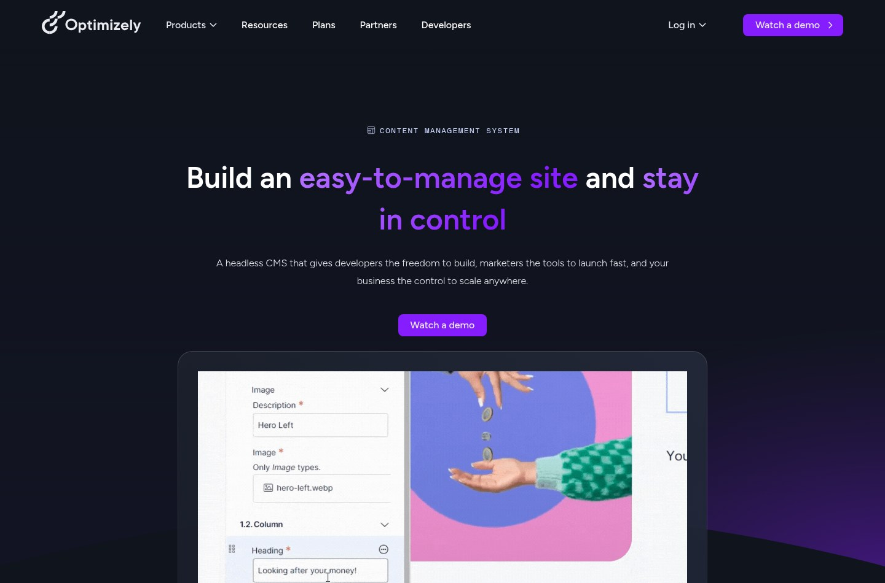
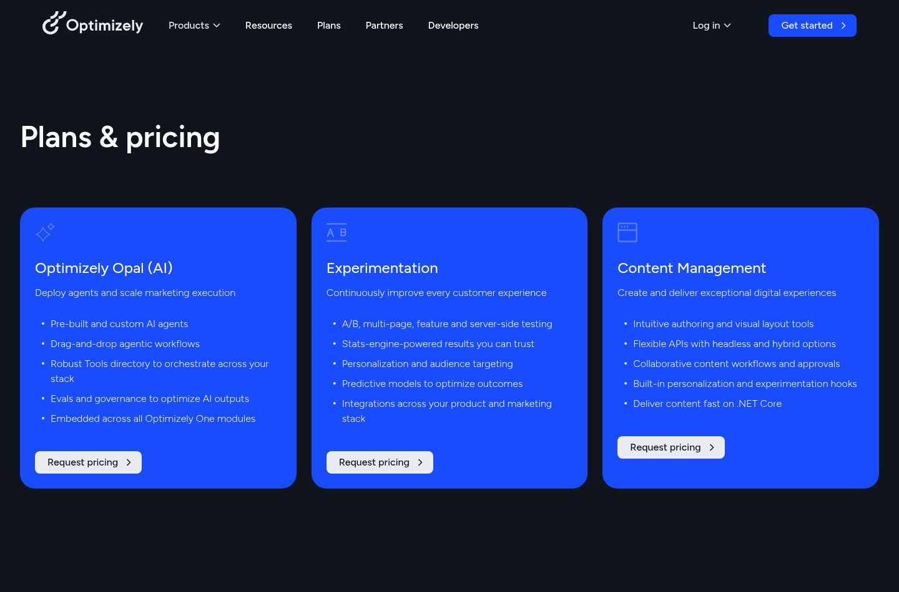
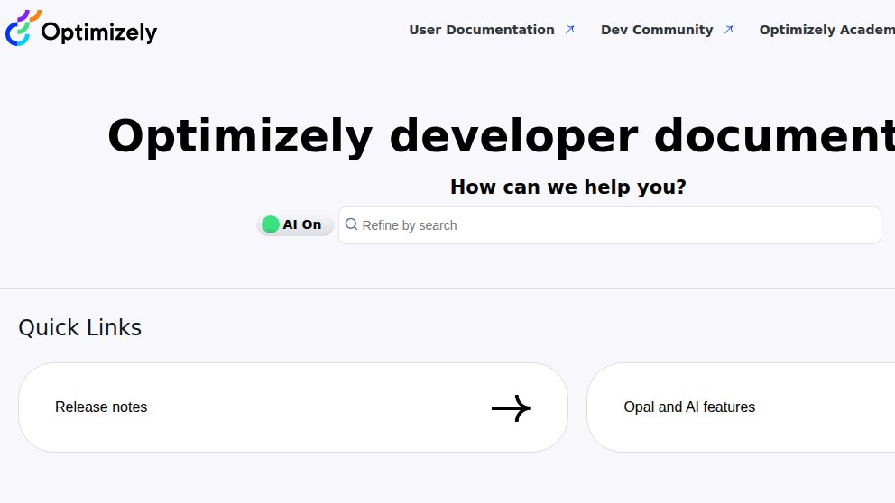

Optimizely CMS: scouting the Episerver-rooted DXP from outside the sales wall
Optimizely CMS is what Episerver became after the 2021 rebrand and the merger with Optimizely's experimentation business. It still carries the .NET / Windows roots that define the on-prem product, but the 2026 buying motion is firmly SaaS — Optimizely Graph in front, "Opal" AI agents on top, and a sales-led plans page where every CTA is "Talk to sales." We spent an evening trying to evaluate it the way someone whose CMO just said "use Optimizely" would: read the docs, hit a public endpoint with curl, look at the Plans page, decide whether this is sane to put on a roadmap. Here is what we found, what we couldn't find, and where Optimizely lands next to Sitecore XM Cloud, Contentstack, and the open-source headless tier we already self-host.
We're the team behind SimpleReview, a Chrome extension that drafts code-fix PRs on whatever element you click on a broken admin or storefront. We are not affiliated with Optimizely, not partners, not customers, never sat through a demo call. This page is a single scouting session on 2026-05-07 from outside the sales wall: real headless-Chrome screenshots of the public marketing, plans, and developer docs sites, and a real curl against the public Optimizely Graph endpoint at cg.optimizely.com. If we got something wrong, open a GitHub issue and we will fix it.
What Optimizely CMS is, briefly
Episerver shipped its first CMS in 1997 as a Windows / ASP.NET / SQL Server stack. For two decades it sat in the "enterprise .NET CMS" lane — IIS hosting, Visual Studio integrations, a content tree authoring model, license deals opening around six figures a year, and a deep partner network of Microsoft-stack agencies. The 2020–2021 acquisition of Optimizely (then a standalone experimentation company) flipped the brand: Episerver took the Optimizely name and the merged entity reframed itself as a "Digital Experience Platform."
The CMS is still the gravity centre. Optimizely now sells it as "Optimizely CMS" (formerly Episerver Content Cloud) and pairs it with separate but co-marketed products for Experimentation, Personalization, Commerce, Content Marketing Platform, and Data Platform. The 2026 wrapper around all of this is "Opal" — the agentic AI layer that Optimizely rolled out across 2025. The company describes the CMS as "a headless CMS that gives developers the freedom to build, marketers the tools to launch fast, and the business the control to scale anywhere" on the public product page:

https://www.optimizely.com/products/content-management/ via headless Chrome at 1440×950 after closing the cookie overlay. Note the headless framing as the lead — that's the 2026 positioning. The on-prem .NET roots are not visible above the fold any more.Friction 1 — the Plans page is product cards, not numbers
The first move on any vendor evaluation is the pricing page. Optimizely does have one — at /plans/ — and it does respond with HTTP 200, which is more than we got from Sitecore. Loaded in a real browser, however, the page is not a pricing ladder. It is a product menu. The H1 reads "Plans & pricing" and the body is three side-by-side product cards: Optimizely Opal (AI), Experimentation, and Content Management. None of them carries a number above the fold. Each card opens into a "Talk to sales" form.

https://www.optimizely.com/plans/ captured again on 2026-05-08 at 1440×950. The page shape is “pick the product, then request pricing,” not “pick the tier.” The Opal (AI) card is co-equal with Experimentation and Content Management — that is the marketing centre of gravity in 2026.And the path that would exist on a more transparent vendor — a per-product pricing URL — returns a 404:
$ curl -sI -L \
-w "%{http_code} %{url_effective}\n" \
https://www.optimizely.com/products/cms/pricing \
-o /dev/null
404 https://www.optimizely.com/products/cms/pricingIf you're trying to put Optimizely CMS into a five-vendor comparison spreadsheet, you cannot price it from the public site. There is no Starter / Growth / Enterprise table, no per-seat cost, no per-environment cost. The only path to a number is a sales call — the same pattern we saw on Sitecore XM Cloud and Contentstack the same week.
Friction 2 — the developer docs are good, but they live behind an "AI On" toggle
The canonical developer documentation lives at docs.developers.optimizely.com. As of 2026-05-07 the landing page reads "Optimizely developer documentation" with the subtitle "How can we help you?" and an "AI On" toggle next to a search box — meaning the default search experience is now an LLM-style answer engine, not a literal index. The Quick Links row leads with two cards: Release notes and Opal and AI features. That's the 2026 emphasis: the historic docs are still there underneath, but the front door is built around the AI assistant.

https://docs.developers.optimizely.com/. The "AI On" toggle is on by default. The first two Quick Links — Release notes and Opal — say everything about the 2026 priorities. The reference docs are detailed and well-organized once you click through, but the landing page is pitched at executives evaluating the AI story, not developers landing from a Stack Overflow link.Three other top-nav targets are visible: User Documentation, Dev Community, and Optimizely Academy — the latter two open in new tabs, confirming they're separate properties. That's the same shape as Sitecore's split between doc.sitecore.com and developers.sitecore.com: a sprawling content portfolio organized by audience rather than by product.
What the API actually does — one real call
Pricing pages can hide numbers; production endpoints cannot. Optimizely Graph is Optimizely's GraphQL content-delivery API and is publicly addressable at cg.optimizely.com. Without an account, without a tenant, without any context, you can hit it with curl and observe how it behaves. The error envelope itself is documentation, in the same way a 401 page on any well-built API tells you what the auth layer expects.
$ curl -s -X POST \
"https://cg.optimizely.com/content/v2" \
-H "Content-Type: application/json" \
-d '{"query":"{ __schema { queryType { name } } }"}' \
-i
HTTP/2 401
date: Fri, 08 May 2026 07:06:09 GMT
content-type: application/json
content-length: 146
access-control-allow-origin: *
x-correlation-id: 9f869ebefec1d284
x-response-time: 0
x-started-at: 2026-05-08T07:06:09.118Z
vary: accept-encoding
server: cloudflare
cf-ray: 9f869ebefec1d284-FRA
alt-svc: h3=":443"; ma=86400Body of the response, verbatim:
{
"code": "AUTHENTICATION_ERROR",
"status": 401,
"details": {
"correlationId": "9f869ebefec1d284",
"startedAt": "2026-05-08T07:06:09.118Z",
"elapsedTime": 0
}
}That is a clean, structured error envelope — not RFC 7807 strictly (no type URI, no detail field), but the Optimizely-specific shape is consistent: code, status, and a details object with correlationId for support tickets, startedAt for wall-clock pinning, and elapsedTime for billing/SLA traceability. The HTTP status is 401 with no WWW-Authenticate header, which means the endpoint expects an auth header it doesn't advertise on the failure path. Sending an explicit but invalid Authorization: epi-single invalid-test-key header still returns the same 401 envelope — the credentials are validated, not just looked for.
cf-ray ending in -FRA means the request hit Cloudflare's Frankfurt POP (we're on a Hetzner FRA-region box). Total time end-to-end was under 200ms; the rejection happened at the edge, not the origin. CORS is fully open for browser-side queries, the long-lived session cookie (__cf_bm) is HttpOnly; Secure, and the response time is logged in the body for the caller to trust-but-verify.
Optimizely Graph is a tenant-scoped GraphQL endpoint where the tenant resolves from the Authorization header (in practice epi-single <key> for single-key read access, or HMAC for App Key + Secret pairs). Without a valid key the surface area doesn't leak schema, fields, or tenant identifiers. Compared to the legacy Episerver Content Delivery API — an OData-style REST endpoint baked into the .NET CMS — this is a substantial cleanup.
How Optimizely CMS compares to the alternatives
We've now done the same scouting walk on a handful of CMSes in adjacent tiers. The honest comparison isn't "which is better" — it's "which procurement category are you in and which trade-offs match." Optimizely sits at the high-touch end of the headless market, alongside Sitecore XM Cloud and Adobe Experience Manager, well above the open-source self-host tier.
| Dimension | Optimizely CMS | Sitecore XM Cloud | Contentstack | Self-host (Strapi/Directus/Payload) |
|---|---|---|---|---|
Time to first curl against your own data |
Behind a sales call. No public sandbox URL we found. | Behind a sales call. | Behind a demo-request form. | ~10 min from docker run. |
| Public pricing | /plans/ page exists but resolves to product cards, not numbers. |
None visible. /pricing path 403s. |
"Contact us" only. | Self-host: free. Cloud tiers: published. |
| Hosting model in 2026 | SaaS (Optimizely CMS / DXP). On-prem Episerver in long-tail maintenance. | Cloud-only (XM Cloud). On-prem XM/XP in maintenance. | SaaS-only since launch. | You. |
| Delivery layer | Optimizely Graph — Cloudflare-fronted GraphQL with structured JSON errors and correlation IDs. | Experience Edge — Cloudflare-fronted GraphQL, RFC 7807 errors. | Multi-region CDN (AWS/Azure/GCP), 7 region URLs. | Whatever you put in front of the container. |
| Auth model on the public CDN endpoint | Authorization: epi-single <key> single-key, or HMAC App Key + Secret. |
sc_apikey header, tenant resolved at edge. |
api_key + access_token headers. |
BYO. |
| AI surface | "Opal" agents — pre-built agents, drag-and-drop workflows; a co-equal product with the CMS. | "SitecoreAI" — agentic content authoring, brand voice, currently the marketing wrapper. | Brand-aware writing assistant + agent workflows. | BYO LLM via plugins. |
| Heritage stack | .NET / ASP.NET / SQL Server underneath. Episerver lineage still visible in the developer surface. | Windows / .NET / Solr / MongoDB on-prem; cloud is rebuilt. | Built cloud-native. | Node.js or Python. |
| Vendor lock-in | High. Authoring lives in their tenant; export tooling exists for support, not migration. | High. | High. | Low. Database is yours. |
| Realistic procurement window | Months. Master Service Agreement, DPA, security review. | Months. | Weeks to months. | One afternoon. |
None of those rows are a verdict. If your CMO has already chosen Optimizely on the basis of "who do our peer brands use" — and the partner network is genuinely deep, especially in retail and B2B with Microsoft-stack agencies — none of the technical rows will overturn that decision and they shouldn't. If your situation is closer to "a six-person team picking a CMS for the next two years," Optimizely is a category mismatch, not a worse product.
If you've been told "use Optimizely" — questions worth asking before the demo
This article's audience is partly someone who got handed Optimizely as a directive from someone above them and wants to be a credible voice in the room. A short list of things we'd want answered on a first call, in roughly the order we'd ask them:
- What does a year cost at our content volume? Optimizely prices on a custom basis — entries, environments, Optimizely Graph requests, Opal agent runs. Get a written number with the variables that move it. Specifically: are Opal agent invocations metered, and what is the unit?
- What is the migration story off? Authoring lives in their tenant. The export path exists; ask for a written description of the worst-case "we leave in 18 months" scenario, including image / asset URL portability and content tree fidelity.
- What does the on-prem-Episerver-to-cloud migration cost? If you have legacy Episerver, this is the largest hidden line item. Item compatibility, custom rendering rewrites, and the cost of re-platforming any custom .NET code all live here.
- What is the Opal gating story today vs roadmap? The Plans page leads with Opal as a co-equal product. Ask which Opal agents are GA, which are early access, and which are conference-deck. Ask for sample agent definitions.
- What is the SLA on Optimizely Graph in our region? Cloudflare-fronted is a strong sign; ask for the contractual number, the published incident history, and whether the SLA covers cold-cache reads or only warm.
- Who are our two reference customers in our industry that started in the last 18 months? Old references selected on-prem Episerver for different reasons; new customers selected the SaaS DXP for the reasons that matter to you.
Things we'd change about the public surface
- Make the Plans page actually plan-shaped. The current page is a product menu. Even a single anchor number — "starts at $X / month for Y entries / Z Optimizely Graph requests" — would let evaluators leave the page with a budget.
- Self-serve developer sandbox. A scoped 14-day tenant with the demo content tree pre-loaded would let evaluators write a real Next.js + Optimizely Graph integration before the first sales call. Sitecore and Contentstack have the same gap; not an excuse.
- Cite the on-prem-Episerver-to-cloud migration cost on the marketing page. The audience that needs Optimizely CMS most — existing Episerver customers — also has the largest unspoken cost. Owning that number publicly is a trust move.
- Give the developer docs landing a developer-first front door. A side-by-side "I'm evaluating" / "I'm building" split would close the gap for the dev landing from a search result.
What we'd actually do
In a Fortune-500 brand-team seat — especially one already on the .NET / Microsoft stack — we'd budget the demo. Optimizely's heritage in that ecosystem is genuine, the partner network is wide, Optimizely Graph is well-engineered behind Cloudflare, and the Opal bets are credible. Co-marketing the experimentation product alongside the CMS is also a real differentiator nobody else cleanly matches.
In a startup of 6–30 people with no editorial team and no legal department, we'd not open the conversation. The procurement window, the lock-in, and the inability to evaluate without a phone call are disqualifying for that segment. We'd self-host Strapi, Directus, or Payload and revisit once we had revenue and a compliance need to justify the line item.
Where this fits
Adjacent scouting notes from the same week: Sitecore XM Cloud — outside the sales wall, Contentstack — behind the Contact-us wall, Strapi — the open-source headless default, Directus — SQL-first with a real admin, Payload — TypeScript-first headless, Ghost — the headless-blog wedge. SimpleReview is the Chrome extension that turns whatever element you click on a broken admin or storefront into a draft code-fix PR — it works the same on an Optimizely-rendered Next.js front end as it does on a Strapi one, because by the time the page renders it is just HTML.
Demo: SimpleReview on an Optimizely CMS issue